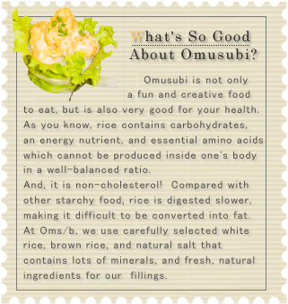
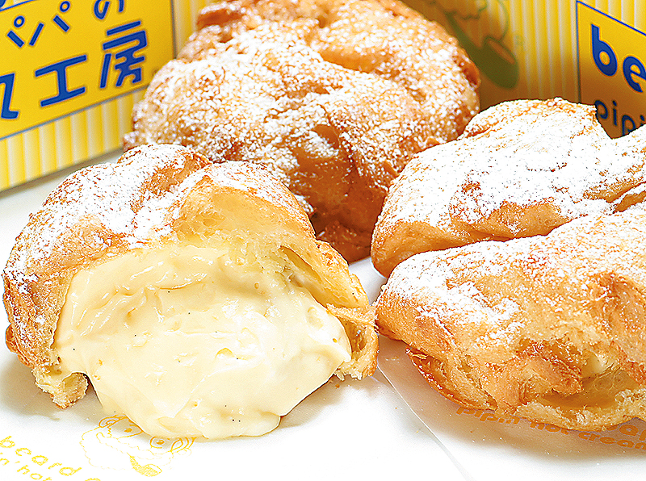

Vendors
Food
Japanese food is readily available in New York City. But, how often do you see real Japanese people making the food there? How often do you see real Japanese people eating there? At CJS MATSURI 2009, there are real Japanese people serving real Japanese food, as Japanese people in Japan would be eating it. Not only is it authentic, but they are serving foods that might surprise you as being Japanese...
-
Go Go Curry
GO! GO! CURRY! New York is a popular curry restaurant from Japan that launched its Manhattan store in May 2007. Their most popular dish is Katsu Curry, in which the extra thick curry sauce is poured over Koshihikari rice, steamed to perfection and topped with a crunchy pork cutlet. For the best bang for your buck, try the Grand Slam Curry. It’s a full portion meal with every topping imaginable, from cutlets and sausages to cheese and pickles!
GO! GO! CURRY!
273 W. 38th St.
New York, NY 10018
(212-730-5555)
Check out their official homepage here!

-
OMS/B
OMS/B (read omusubi) serves a new kind of dish somewhere between a rice ball (omusubi) and sushi. These delectible little balls are cheaper than sushi and far more filling. They're also very pretty to look at! Try their spicy tuna, shrimp pop corn, eel, and more!
Check out their official homepage here

-
Beard Papa's
These fresh n' natural cream puffs will take you on a sweet journey you'll want to come back to over and over again. The soft yet crispy outer layer mixes gently with the smooth custard cream filling, creating a perfect harmony in your mouth. Beard Papa's has been a huge trend in Japan since 1999- visit their worldwide franchises now, across Manhattan and beyond!

Other
-
Kinokuniya
Columbia Japan Society is excited to have one of the biggest Japanese Bookstores in the city, Kinokuniya, join us for Matsuri 2009. Kinokuniya is a chain bookstore found all over Japan. Recently reestablished in the Bryant Park area, the New York Kinokuniya is a great place for your Japanese cultural needs. With shelves and shelves of Japanese books, mangas, dvds, music, stationary, and more, dropping by this store is a must for any connoisseur of Japanese culture. Be sure to check out their booth to see what new mangas, or books they might be selling.